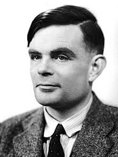

Alan Turing fue un matemático, lógico y científico de la computación británico, considerado uno de los padres de la informática moderna y la inteligencia artificial.

"A veces son las personas de quienes nadie imagina nada las que hacen las cosas que nadie puede imaginar."
Durante la Segunda Guerra Mundial, Turing trabajó en el descifrado de códigos alemanes, contribuyendo de forma decisiva al desarrollo de las primeras máquinas de cómputo.
Puedes conocer más sobre su historia en Wikipedia.